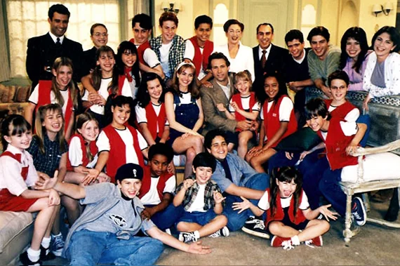

Detalhes técnicos
A primeira fase da terceira temporada de Chiquititas foi exibida de 03 de agosto de 1998 até 25 de dezembro de 1998, em 105 capítulos. Adaptada por Caio de Andrade e dirigida por Cláudio Ferrari, em coprodução entre SBT e Telefe. Por causa do sucesso do segundo CD da trama, o terceiro CD não foi lançado nessa fase. Por isso, decidiram lançar o CD Em Festa, com músicas comemorativas e as músicas necessárias para essa fase. A música de abertura foi Mexe Lá, presente no segundo CD da novela.
Sinopse

Para se livrar de uma vez por todas das crianças, Carmen Almeida Campos decide vender o orfanato, colocando todas as crianças na rua. Para a surpresa de todos, Carolina recebe uma carta de Pedro Vega, que chama todos para um casarão no Beco da Harmonia.
Ao chegarem ao endereço indicado na carta, encontram um casarão abandonado e misterioso. O lugar é escuro, repleto de teias de aranha e com armadilhas escondidas. Eles conseguem reformar a casa e passam a viver nela.
Helena Kruegger (Imara Reis) é uma funcionária de Pedro Vega, que mora nesse casarão com sua neta Lúcia (Marina Belluzo). Quando Carolina e as crianças chegam na casa, Helena faz de tudo para expulsar as crianças. Entretanto, Pedro Vega ignora suas reclamações, fazendo com que Helena desista de suas tentativas. Lúcia, por sua vez, é mantida em cárcere privado pela avó, que a mantém trancada em um dos quartos sob a justificativa de protegê-la.
Mili fica cega em decorrência de um acidente provocado por Marian (Mariana Oliva). Gabriela Almeida Campos (Vanusa Ferlin) retorna da Suíça recuperada de seu estado catatônico e parte em busca da filha. Carmen aproveita a situação, falsifica o testamento e convence Gabriela de que Marian é sua verdadeira filha.
Felipe (Marcos Pasquim) é um homem agressivo que surge na vida das crianças em busca de sua filha. Inicialmente, envia Horácio (Ariel Moshi), disfarçado de Salvador, um homem em situação de rua, para conquistar a confiança de Carolina e obter informações que possam ajudá-lo a descobrir a identidade da menina.
Para piorar de vez, agora os órfãos precisam lidar com "os vizinhos", um grupo de crianças que moram no Beco da Harmonia e começam a infernizar a vida das crianças do orfanato.